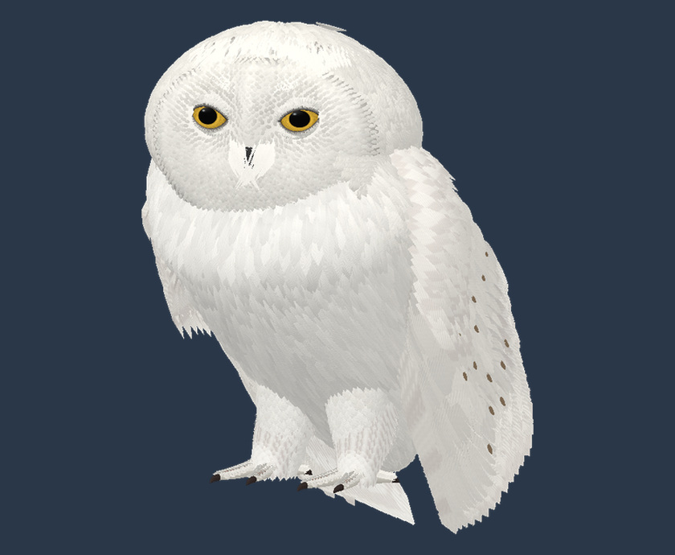
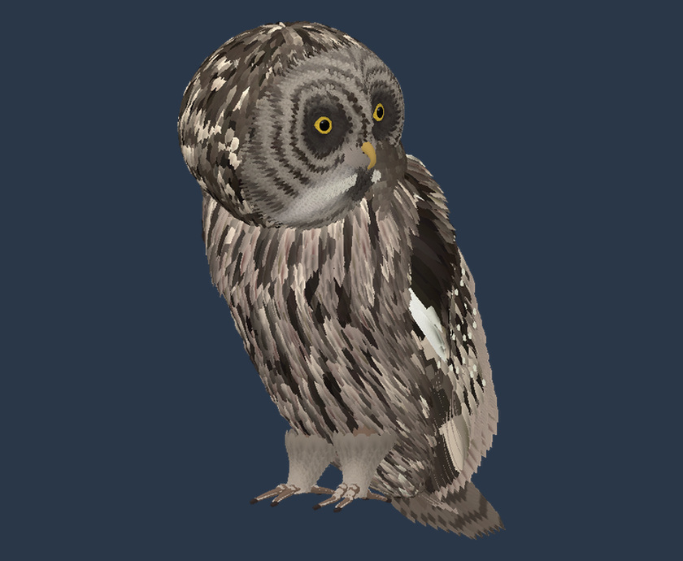
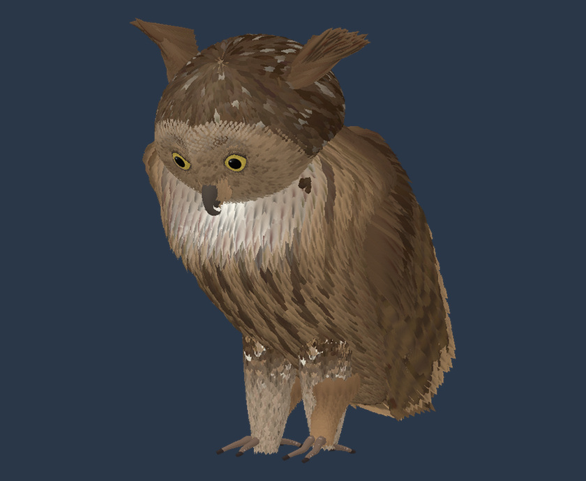

夜行图鉴
观察站
浏览 251 种

雪原
雪鸮

林间
乌林鸮

河岸
毛腿渔鸮
物种画廊
选择一只猫头鹰，打开三维模型。
全部物种
有三维模型
有中文辨识笔记
查看更多物种
夜视观察站
并排观察 251 种猫头鹰的插画与 3D。
雪鸮
西仓鸮
雕鸮
3D 模型
正在加载雪鸮…
重试加载
花叔插画
花叔
· AI 生成插画 ·
CC BY 4.0
查看原图
解锁全部 251 种三维模型
点击「选择模型文件夹」，选择夜行图鉴旁的 models 文件夹。选择一次后即可连续查看。
选择模型文件夹
选择单个 GLB
对齐插画
正面
侧面
背面
全身
特写
中性光
暂停
观察
展翅
保存观察卡
看三维模型
查其他物种